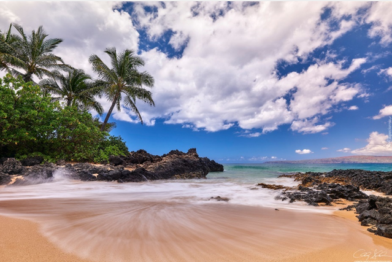
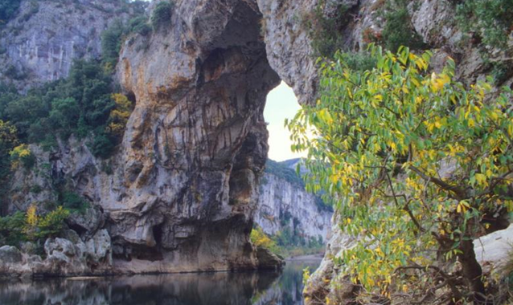
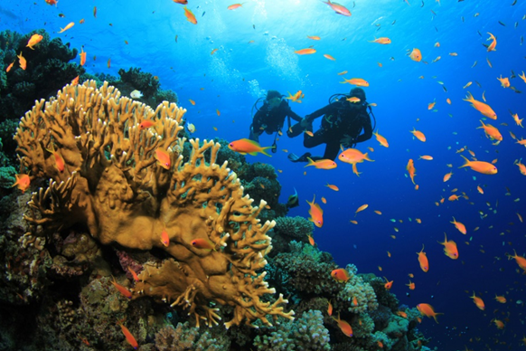
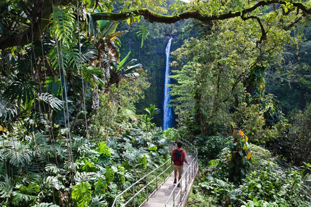
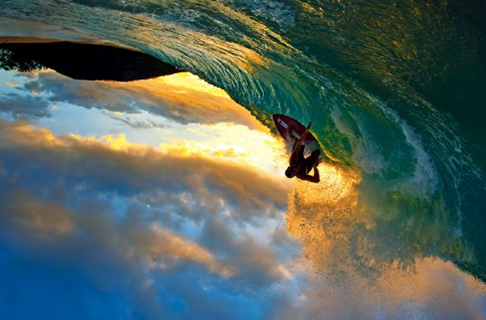

Aloha Hawai’i

Wyspa Hawai’i (nazywana również Big Island) to największa wyspa archipelagu Hawajów. Charakteryzuje się ona typowo wulkanicznym krajobrazem, lasami tropikalnymi i cudowną, miejscową kulturą.
Z ALOHA TRAVEL zobaczysz naturalne piękno Hawai’i!8-dniowe wczasy w Hilo
Dzień pierwszy: Wylot z Warszawy do Los Angeles. Obiadokolacja. Nocleg w Los Angeles.
Dzień drugi: Śniadanie i wykwaterowanie z hotelu. Wylot z Los Angeles do Hilo (wyspa Hawai’i). Zakwaterowanie w hotelu Hilo Seaside Hotel. Zwiedzanie miasteczka Hilo (m.in. Muzeum Tsunami, Ogród Liliuokalani). Obiadokolacja. Nocleg.
Dzień trzeci: Śniadanie. Przejazd do Parku Narodowego Wulkany Hawai’i (podziwianie dymiącego krateru wulkanu Kilauea, zwiedzanie jaskiń Kaumana i Kazumura). Możliwośc wykupienia wycieczki autami terenowymi na górę Mauna Kea. Powrót do hotelu. Obiadokolacja. Nocleg.
Dzień czwarty: Śniadanie. Przejazd na Punalu Beach – jedną z najsłynniejszych czarnych plaż. Odpoczynek, plażowanie. Spacer po okolicy i podziwianie krajobrazu wulkanicznego (lawowe wybrzeża, kratery) Powrót do hotelu. Obiadokolacja. Nocleg.
Dzień piąty: Śniadanie. Przejazd na Hapuna Beach. Odpoczynek, możliwość nauki surfingu i kitesurfingu. Dla chętnych nurkowanie pośród rafy koralowej. Powrót do hotelu. Obiadokolacja. Nocleg.
Dzień szósty: Śniadanie. Przejazd do Parku Narodowego Akaka Falls, podziwianie wodospadów Akaka, spacer przez las tropikalny i Thurston Lava Tube (tunel utworzony przez zastygłą lawę). Przejazd do hotelu obok krateru wulkanu Kilauea. Obiadokolacja. Nocleg.
Dzień siódmy: Śniadanie. Spacer po miasteczku. Wykwaterowanie z hotelu. Przejazd na lotnisku. Wylot z Hilo do Los Angeles. Obiadokolacja. Nocleg w Los Angeles niedaleko lotniska.
Dzień ósmy: Wylot z Los Angeles do Warszawy. Zakończenie imprezy.

Cena: 10 199,00 zł Cena zawiera: nocleg (5 w Hilo + 2 w Los Angeles) , wyżywienie HB (śniadanie, obiadokolacja), transport, transfery lotnisko – hotel – lotnisko, ubezpieczenie NNW i KL, opiekę polskojęzycznego rezydenta.
Cena nie zawiera: wycieczka autami terenowymi na górę Mauna Kea, lekcji surfingu, wydatków osobistych.
Dostępne terminy:
Maj: 22-29
Czerwiec: 1-8, 16-23
Lipiec: 1-8, 9-16, 20-27
Sierpień: 2-9, 11-18, 20-27


